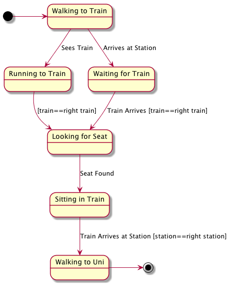

State Diagrams
Table of Contents
1 About This Sprint
In this sprint we study a design tool to help you understand stateful behaviour in your applications.
2 User Stories covered in this Sprint
- As a software designer I want to document the states the application can be in so that I can better design them and get an overview of permissible transitions.
3 Introduction
For some applications, or for certain parts of some applications, it is meaningful to study the states your application can be in. Usually, your application may be in one state and have specific rules for when you can transition to another state.
For example, if you come here by train, you probably have a several different states:
- Walking to the train station
- Waiting for the train
- Walking in the Train to find a seat
- Sitting in the train
- Walking from your seat, out of the train, and up the hill to the Uni.
It was tempting to also add “Entering the train”, and “Exiting the train”, but this would not be a good idea since these are more akin to Events than States. Incidentally, this is what most students get wrong in a state chart – they mix up what is a state and what is an event.
When you are walking to the train station, what may change your state to something else? If you see the train coming (this is an event), you may need to switch to the state
- Running to the train station
When you are waiting for the train, you can obviously not enter the train and start looking for a seat unless the train arrives (this is also an event).
When you are sitting on the train, arriving at a station is an event that could trigger a transition to the “walking from your seat and to the uni” state, but only if you have arrived at the right station. This is a condition for the arrive at station event.
Enough dry talk. Let’s put this into a UML State Diagram:

Figure 1: A UML State Diagram for Catching a Train
You may not model your entire application as a state chart. In fact, you may not need to model it at all. Also, you may have several state charts that are not connected to each other (other than that they logically must be solvable in the same system).
State charts are tricky. On one hand, they are a useful tool to visualise dynamic behaviour and to think about your system in terms of states and events. On the other hand, they don’t really fit in with the other UML diagrams. Here’s a list of questions I would like you to think about for a while. We may come back to these questions during a lecture, sinnce in order to understand the answers you also need to understand a lot more about software design:
- Are state diagrams an analysis tool, or are they a design tool?
- Can you get the states from a UML use case?
- Can you express the same in a state diagram as in a (system) sequence diagram? If so, what is the added value?
- Do you learn anything about what classes or what interactions between classes you need in your system from a state diagram?
This sprint is smaller than many of the others because – as you notice – state diagrams are difficult to pin down. Rather than bundling State Diagrams with something else it makes more sense to keep them separate so that I may include the sprint in different parts of the course flow. Having said this, state charts are probably one of the older modelling techniques, and there is actually quite a lot written about different types of state charts and their cousin Petri Nets.
4 Learning Material
4.1 Book Chapters
- C. Larman, Applying UML and Patterns, 3rd Edition, Chapters:
- UML State Machine Diagrams
4.2 Screencasts
5 Experiential Learning
5.1 Sprint Test Plan
Go through the user stories for this sprint and make sure you have a clear understanding of how to solve each of them.
Revisit and update your risks and contingencies section.
Add and/or revise the following items to your glossary:
- State Diagram (also: State Chart)
Make sure you understand what each item is, the notation for them, and how to use them either in isolation or together with the other concepts.
5.2 Self-Study: Stateful Application
Find a software application or a software game where you can easily identify different states. Try to model this in a state diagram.
5.3 Assignment: Stateful Behaviour
Is there any behaviour in your assignment system that exhibits a meaningful stateful behaviour? If so, model it in one or more UML State Diagrams.
5.4 Update Course Backlog
How can you design your software such that the states are the central entity as opposed to the concepts?
Are there any other questions that you want answered? Add them, along with a brief strategy for how to find an answer.
6 Sprint Acceptance Tests
You are done with this sprint when:
- You have reviewed your application for stateful behaviour
- You have optionally created UML State Diagrams for this behaviour.
- You have committed/pushed any created documents to your project repository
You may also have
- Updated your Sprint Test Plan
- Updated your Course Backlog
- Created one or more State Diagrams for different software applications.